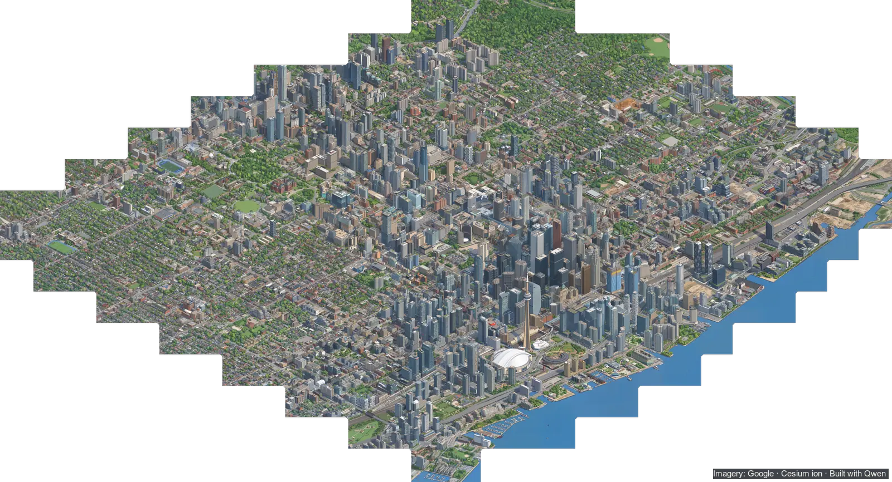
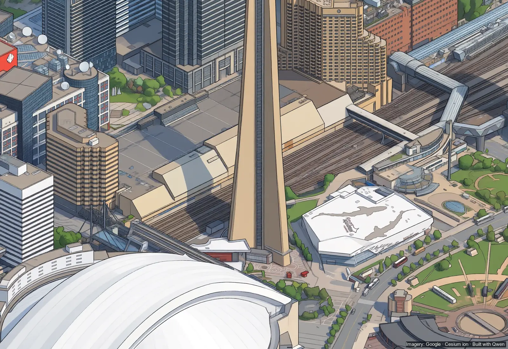
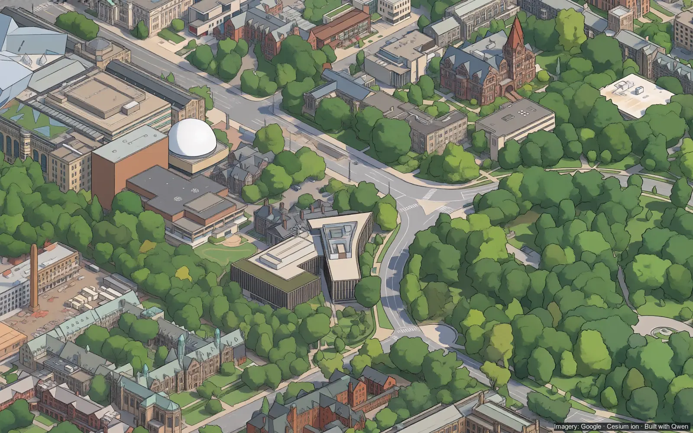
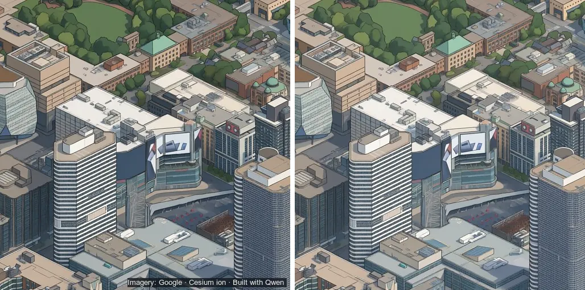
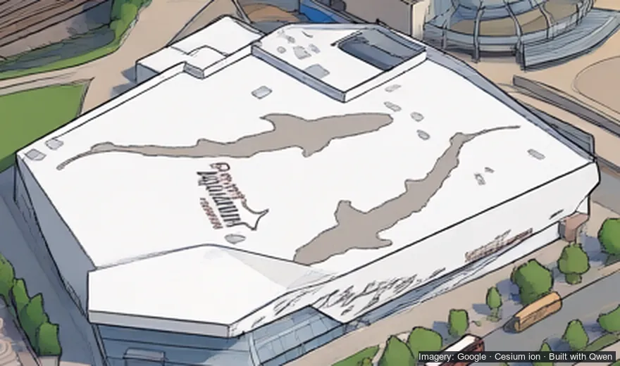
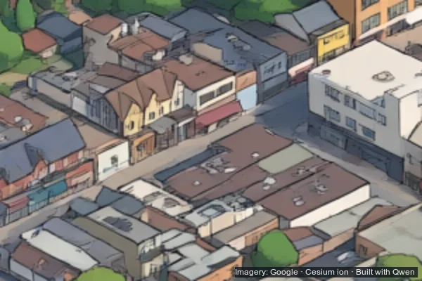
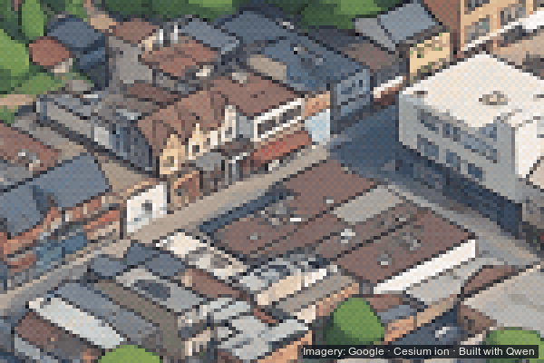

Local man’s laptop ‘draws’ downtown
Bathurst to the Don, Bloor to the harbour: 12.66 km² of Toronto in one picture, made in an evening. The drawing was free. The homework cost $79.72. The internet has notes.

Drawn by a laptop
Toronto — A local man has drawn all of downtown Toronto. That is, his laptop has. That is, an image model on his laptop has, after another model showed it how.
The picture runs from Bathurst to the Don and from Bloor to the harbour: 12.66 square kilometres, about 2% of the city, in the flat colours and black outlines of a 1990s city-builder game. It is one image of 256 megapixels. It was made in one evening.
The man, John Fewell, posted it on X at 8:34 a.m. Tuesday, to an account with 153 followers. At press time the post had been seen 37,681 times. It had 666 likes, 307 bookmarks, 50 reposts, 5 quotes and 43 replies, and 1,711 people had clicked through to the map.
“The whole downtown core of my isometric Toronto is drawn,” the post began. One reader put “drawn” in scare quotes. Fewell replied: “Oh no here come the pitchforks.”
He also promised a full write-up. This paper has obtained it.
Bathurst to the Don
The map is at iso.sloptoronto.ca. You can pan it, pinch it on a phone, jump to nine places from a “Go to” menu, and share the spot you are looking at.
Big lettering survives: SHERATON on the hotel roof, KPMG, TRIDEL, CANADA MALTING. Small signs do not. The roof of Ripley’s Aquarium, next to the CN Tower, carries lettering that is sign-shaped and unreadable. A text-reading program sent to check the PwC sign at Bay and Front read it as “pure.”

A robot taught a robot
The camera. It starts with Google’s photorealistic 3D model of the city, streamed through Cesium ion and photographed from one fixed camera, 30 degrees down, turned to line up with the street grid. Every frame lines up with its neighbours to the pixel.
“Oh no here come the pitchforks”
The teacher. Google’s Gemini 3 Pro Image, better known as Nano Banana Pro, redrew a few hundred of those frames as illustrations. It was told how to draw, never what: flat colour, crisp dark outlines, a nod to the 1990s city-builders, add nothing and remove nothing. Tiny London found that any thing you name in the instructions turns up somewhere it doesn’t belong.
The marking. Automatic checks compared every drawing with what is known to be there: the render’s shapes, the City’s water, the lettering, each building’s colour. A drawing that failed was redrawn, up to three times, then thrown out. The first set kept 344 pairs. Nobody graded them by hand.
The student. Qwen-Image-2.1-Turbo, an open image model, then learned from the pairs: render in, drawing out. A small add-on to it was trained for about two hours on one rented H100 graphics card. The camera had already fixed where everything goes, so all it had to learn was a drawing technique. A second round taught it to keep real signs.
The evening. On Monday, from 6:47 to 11:55 p.m., the student drew the map on Fewell’s laptop, an M5 Pro with 48 GB. Not tile by tile: the map was one picture throughout, worked in 1,024-pixel windows on two grids offset from each other, 253 windows on one and 211 on the other, so no window’s edge survives. It went in eight blocks. Each new block held its finished neighbours still and redrew a strip along their edge. There are ten joins. None shows a seam.
The credit. The method is not Fewell’s. It is Tiny London’s, by Boris Starkov, which he followed closely and credits by name. Tiny London built on Isometric NYC, by Andy Coenen.

Free, plus $79.72
Drawing the map cost nothing: five hours and eight minutes of a laptop Fewell already owned. Teaching the model cost money. The ledgers come to $79.72: $58.41 to Google for the teacher’s drawings and $21.31 to RunPod for rented graphics cards.
Every paid call ran against a hard cap, and both accounts ran on prepaid credit, so a runaway stops when the money does. Most of the teacher’s work went through Google’s batch service at half price. Tiny London’s teacher redrew about 2,500 frames. This one did a few hundred.
That answers an earlier reader, mapping Warsaw, who wrote that fine-tuning a model to their own style had cost about $100 and stopped improving. Fewell’s advice is on the How page; the short version is to get the camera right first, check every teacher drawing against data you trust, and compare saved checkpoints, because an earlier one may be the best. His was.
What went wrong
The $1.50 picture. One test call came back with 11 images instead of one and billed $1.50, about eleven times the going rate. With 74 cents left of the $10 he had approved, Fewell stopped and ran no retries. Every call now caps its output. Even so, 13 calls in the big batch still came back with three to five images, $4.04 between them.
Fifteen hours on hold. The rental service refused every request for a graphics card for about 15 hours. The cause, by Fewell’s own account, was Fewell: his request demanded one exact version of the cards’ software, and every H100 in stock had a newer one.
Downtown went dark. Drawn as one picture, the map came out darker than the same windows drawn one at a time, and darker the bigger it got: a lightness of 0.559 against 0.585, on the scale the project’s records use. The fix is one colour correction applied evenly to the whole map, so it cannot leave a seam.


Signs. The first trained model painted every sign out, because the teacher had been told to draw no text. A second set of drawings taught it to keep real ones. Of 22 signs checked in the core, 5 came through, 5 came out garbled, and 12 came out plain or unreadable.
Two boats nobody ordered. A check of the whole map flagged 37 spots on the water. Nearly all were real boats, docks and shorelines a few pixels off. Two objects on open water were the model’s own: a small hull where the render shows nothing, and a real sailboat drawn far bigger than the dot it was copied from. No one has come forward to claim either.
Up close, it goes pixel
Magnify an AI drawing past about twice its size and it turns to wobbly outlines and smears. This one doesn’t get the chance. From 1.75 times the map fades into pixel art: one art pixel for every two-by-two map pixels, one 256-colour palette for the whole map, hard square pixels all the way to the 8× maximum. Upscalers were tried first. They turned wavy outlines into crisp wavy outlines.


Zoom in and small pixel cars drive the real streets, with red TTC streetcars on their tracks. The streets, signals and tracks are OpenStreetMap’s, as prepared for Slop Toronto (see Disclosure); how many cars go where comes from the City of Toronto’s traffic counts. Cars keep to their lanes, obey one-way streets and stop at red lights, which one reader noticed and approved of. Streetcars wait at the real stops. Cars pass behind buildings, trees and the Gardiner’s deck.
Soon.
Asked where High Park was, Fewell said: “It’s coming.” Asked to continue a few blocks to Midtown: “Yes. Soon.” Asked to go bigger, and separately to do the rest of the GTA from three more angles: “Soon.” Asked about the PATH: “No joke I want to do a PATH map.”
The How page also promises clickable buildings. For the rest of the city there is an estimate. A test block on a rented H100 ran about 21 times faster than the laptop. At that rate the whole City of Toronto would take about 12.9 H100-hours, around $35 at RunPod’s Community price. It would first need more teacher drawings of the suburbs, which are mostly low-rise streets, industrial land and ravines rather than towers.
Disclosure: Slop Toronto and Isometric Toronto have the same owner. He is the local man. This paper has not let that affect its coverage.